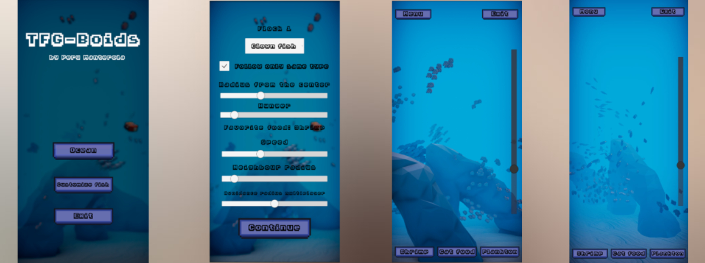

Boids App
This project was made as my final degree project at University, applying a Boids algorithm to simulate the movement and behaviour of banks of fish. The app also has a layer of interaction for the user, who can change the behavior of fish and get different results as well as interact with them in an natural ocean enviroment.
Every aspect of the app has been developed by me from programming to modeling. The app is not currently available in the Google Play Store as I'm currently improving the game and adding more features, expecting to release the final version shortly.